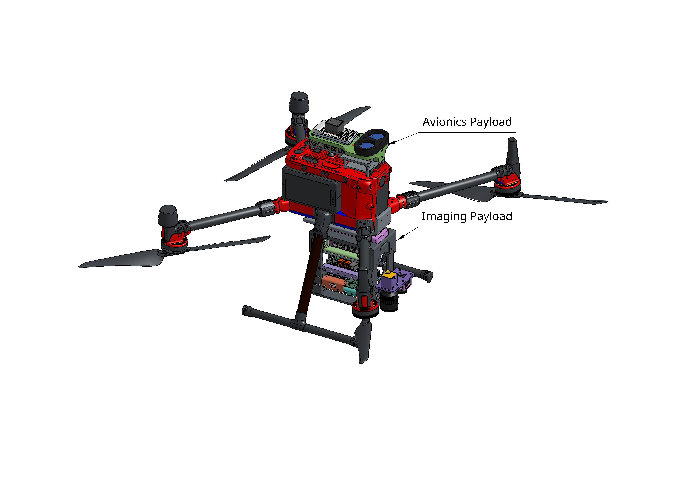

Contributions:
Mechanical Lead of this project, my main responsibilities is designing the mechanical fixtures and structures that integrates the electronic payloads with UAV platforms available to our lab.
- Designed payload mounts for compute, power, and camera systems across two UAV pltforms using Onshape.
- Integrated Rsapberry Pi 5, Ethernet Switch, voltage regulator PCBs, NVMe controller.
- Implemented modular design for effortless swapping of payloads.
DJI Matrice 350 RTK Platform
Imaging Payload